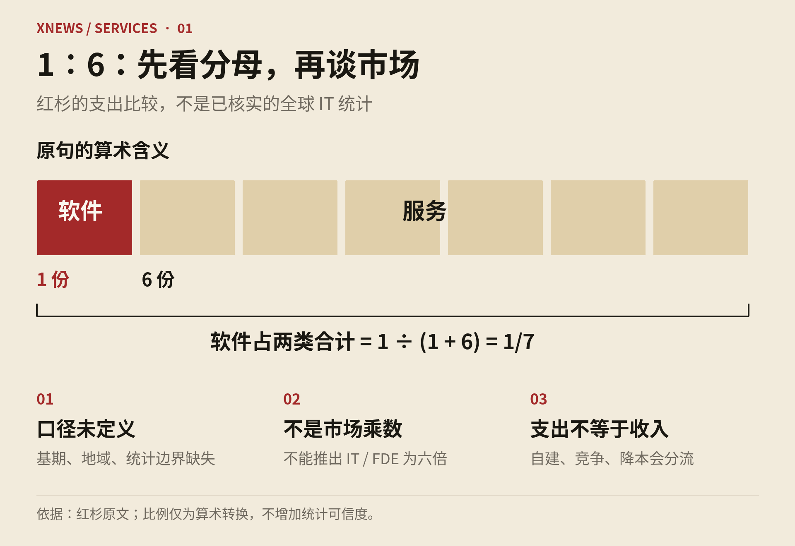
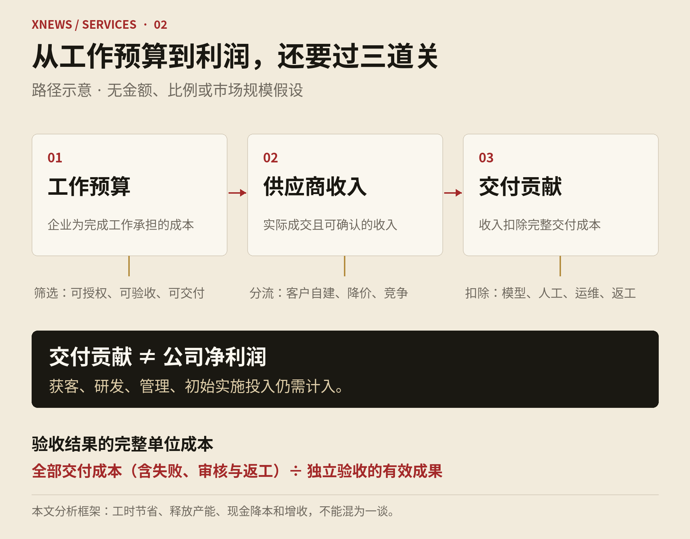
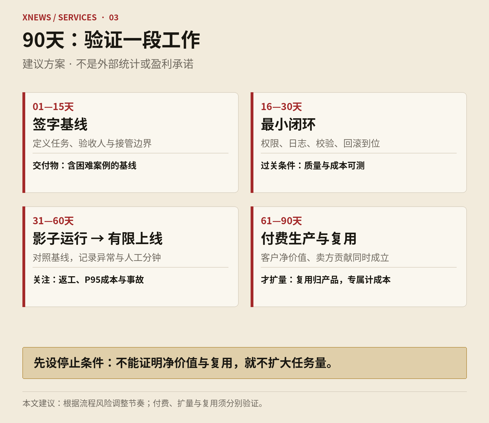

先保留三个经营判断
市场机会、客户价值和供应商利润，需要分别验证。
- 市场 / MARKET
支出池不是收入池
客户让利、自建、平台内置和不可授权的工作，会缩小可获取市场。
- 价值 / VALUE
节省工时不等于省钱
释放的产能、避免的现金支出和新增毛利，是不同的验收结果。
- 经营 / ECONOMICS
用已验收成果算成本
模型、人工异常、运维、返工和实施都要计入；贡献不等于净利润。
导读：从工作预算到可持续利润
XNews 深度研究｜2026 年 11 月 4 日
摘要：AI 正在降低编写软件和执行部分知识工作的成本，但没有自动消除交付、验收、责任和获客成本。红杉《Services: The New Software》最有价值的提醒，是把视线从软件许可证移向企业实际购买的工作。它最容易被误读的地方，是把一个更大的支出池，直接当作未来软件公司的收入池。对中国企业服务公司而言，机会确实存在；能否变成持续、有利润、可规模化的业务，要在一个具体流程的损益表上证明。
阅读口径：本文区分已披露事实、调查与实验、机构预测、本文推论。结合已能检索及读取的相关讨论，贯通软件与服务、客户自建、模型进步、FDE组织、自由职业和价值链定位；部分历史长回复未完整返回，本文不声称穷尽全部历史，也不把旧回复当作事实来源。数据核验截止本文日期。
一、这次变化，首先发生在企业购买的对象上
企业购买记账软件，仍要组织人员完成关账；购买“按时完成并通过核验的关账服务”，则把更多执行工作交给供应商。前者交付一种能力，后者承担一段持续工作的完成责任。这一区别，比产品是否挂着 Agent 标签更重要。
Julien Bek 于 2026 年 3 月 5 日发表的红杉文章，提出从工具销售转向工作交付，优先寻找已有外包预算、任务边界清楚的领域。它是一篇投资论纲：其中的公司案例和行业地图用于提示机会，不能当作这些企业已经实现全面自主交付、或者服务业已经取得软件毛利的证明。[1]
本文接受它的方向，但保留三个判断。
第一，可自动化的工作扩大了，供应商可获得的收入未必同比扩大。客户会要求分享降本收益，一部分支出直接消失；另一部分工作可能被客户自建工具、既有软件的内置功能或者更便宜的同行接走。
第二，持续收费与规模经济必须分别证明。有人月月做账，所以合同可以持续；但若业务量翻倍，人工也翻倍，持续收入仍可能具有传统服务经济性。不能用订阅合同的形式掩盖交付成本。
第三，企业会同时购买工具、平台与完成的工作。可核验、可标准化的任务容易交给服务商；高度敏感、难以归因、与内部决策纠缠的任务，可能长期保留在人机协作模式。Copilot 与 Autopilot 不是一条所有企业必经、终点相同的升级路线。
真正值得追问的是：一个供应商能否反复完成同类工作，在质量不降的前提下，让下一份结果比上一份更便宜，同时保留合理定价权？
二、先把“1∶6”讲清楚，否则整个市场判断都会偏移
红杉原文写的是：“For every dollar spent on software, six are spent on services.” 原文相应段落没有给出基期、地域、统计定义和计算来源。它应被标为作者的支出比较，而非独立核实的全球市场统计。[1]
这句话至少不能推出以下结论：
全球 IT 服务支出已经是软件支出的六倍。
AI 会使软件与服务收入结构“反转为 1/6”。
企业购买一元模型或软件，必然创造六元集成、咨询或 FDE 收入。
原有六元服务支出都会转成 AI 服务商收入。
若仅按这两类支出计算，软件占合计支出的比例是 1/7，约 14.3%，而非 1/6；这只是对原句的算术转换，不增加统计可信度。

四组数字，四种统计边界
| 来源与时间 | 软件口径 | 服务口径 | 服务／软件 | 应如何使用 |
|---|---|---|---|---|
| 红杉，2026年3月 | 未定义 | 文章讨论的广义工作与服务 | 6倍，作者断言 | 提醒关注工作预算，不能直接估算FDE市场 |
| Gartner，2026年2月预测的2026年 | 14,336.33亿美元 | IT服务18,668.56亿美元 | 约1.30倍 | 同一版本的全球IT分类比较 |
| 工信部，2025年实际行业营收 | 软件产品32,361亿元 | 信息技术服务106,366亿元 | 约3.29倍 | 中国供给侧营收结构，不能等同买方外包支出 |
| IDC，2026年3月对2029年的预测 | 中国企业软件933亿美元 | 中国企业IT服务接近750亿美元 | 约0.80倍 | 同一企业ICT预测框架内比较，不是实际值 |
小屏幕可横向滚动查看完整表格。比例按原始金额计算。地域、时间、实际值与预测、统计定义不同，不可拼接成趋势。
这里保留 Gartner 二月版，是为了在一致分类下比较。其七月更新把 Services 与 IaaS 分列：2026年软件预测为1.468万亿美元，Services为1.570万亿美元，IaaS为0.287万亿美元。单独Services／软件约1.07；若明确把IaaS加回则约1.26。不能把分类变化画成服务市场突然萎缩的趋势。[5]
中国的3.29倍同样容易误导。工信部的信息技术服务包含云和大数据、集成电路设计、电商平台技术服务等，并非纯粹的人力外包与软件实施。IDC采用买方企业ICT支出框架，且排除运营技术（OT）；它与工信部行业收入统计没有可直接相除、拼接的关系。
因此，更可靠的市场估算应从下往上做：目标客户数 × 每户可交付的年任务量 × 可成交单价 × 可获取份额。再逐项扣除自建、既有供应商内置能力、无法授权的数据和不能承担的风险。宏观支出只能提供背景，不能替代商业尽调。
三、美国及全球企业现实呈现分化，尚不能宣告“软件已死”
使用率已经很高，企业利润兑现仍不充分
麦肯锡2026年调查中，80%的受访者报告个人生产率提升，但报告企业层面 EBIT 影响的比例为37%，约6%符合其高绩效定义；约20%表示AI运营成本限制使用。另有32%表示，编程Agent使其所在组织至少放弃过一次软件采购。这些都是受访者报告，既不是财务审计，也不能证明自建软件全生命周期更便宜。[6]
BCG 2025年全球研究把5%的企业归为领先成熟组，35%处于扩展并开始取得价值阶段，60%尚未报告明显价值。这不等于“95%的AI项目失败”。同样，Gartner关于2027年底超过40%的Agentic AI项目将被取消的说法，是对未来的预测，不能写成已经发生的失败率。[7]、[8]
这些材料支持一个相对克制的推论：需求真实，部署与兑现之间仍有缺口。这个缺口可以形成FDE业务，也可能意味着客户不会为缺乏财务收益的项目继续付费。“企业需要帮助”只证明问题存在，没有证明一家服务公司能有利润地解决问题。
四家机构到底如何看服务业，而不只是怎么看AI采用率
把它们的市场总量、采用调查与红杉放在同一页，仍不足以构成观点比较。更直接相关的研究，呈现的是四种侧重点；以下是本文对公开材料的对照，不是这些机构对红杉文章的正式回应。
Gartner侧重采购与治理：服务商角色改变，企业仍应保留控制。 2026年7月6日研究的公开摘要认为，Agentic AI不会简单取代IT服务商，集成、风险管理和规模化仍需要专业能力；买方应采用混合采购，在内部保留治理能力，按价值而非人数订约。本文只使用公开摘要，没有声称读取付费全文。相较红杉聚焦创业者接管工作，Gartner更关心买方怎样分配责任，以及哪些控制权不能一并外包。[9]
IDC侧重供给侧产品化：行业经验要进入可运营的平台。 2026年5月11日文章提出服务商自建、运营和维护的Agentic AI平台（SPAAP），强调将垂直流程与领域知识转为产品资产，并配备路线图、安全、定价和明确的数据权利。它预测，到2029年，30%的服务商合同将按结果订约，30%的IT服务将作为模块化、平台支持的产品交付。两项是不同口径的预测，不能相加，也不是当前渗透率。与红杉的共同点是工作交付产品化；不同点是IDC明确把既有服务商视为可能的转型主体，而非默认由软件新创替代。[10]
BCG侧重净增量：新工作能否超过旧工作的收入压缩。 2026年2月20日研究预测，未来五年技术服务可出现最多2,000亿美元净新增市场空间，来自Agent方案的建设、部署、运行与新服务需求，同时承认传统工作的效率压缩。它结合超过115名企业高管和75名服务商高管的调查，并指出近60%的买方尚未在含Agent的合同中看到可测的总拥有成本改善。因此“净增量”是模型判断，不是已兑现收入，更不是所有服务商都会增长。[11]
麦肯锡把机会与自我侵蚀放在同一个模型里。 2025年12月17日专题指出，Agent提高生产率及大企业加强内部能力，可能使既有技术服务业务压缩20%—30%；与此同时，Agent工作流和业务职能转型带来新增需求。其判断依据包括2025年7月对亚欧北美200名大型企业高管的调查及市场模型，属于前瞻分析，不是已经观察到的全行业收入跌幅。它还强调软件商、云厂商、服务商和AI新创之间的边界模糊。对红杉论纲的补充在于：接近劳动预算的机会真实存在，但新收入不一定留给原来的服务商，也可能被客户内部能力接走。[12]
四者都讨论了按价值交付、平台化和组织调整，但没有共同证明“服务会全面变成高毛利软件”。BCG的净增量、麦肯锡的存量压缩、IDC的合同结构预测和Gartner的治理建议，回答的是不同问题。不能平均它们的数字，也不能相加成一个超级市场。对FDE经营者更有用的共同检验是：旧计费工作被压缩之后，新增的可复用交付是否足以补偿收入与投资，且客户仍保有可接受的控制权？
SAP：把AI放回企业流程和数据控制点
SAP是一家德国公司，但也是观察美国及全球大型企业软件市场的重要样本，不能将其误称为美国企业。2026年5月，SAP发布的产品方向把业务平台、数据与AI能力合并到统一的业务AI平台，配合Autonomous Suite和Joule Work，争取同时控制业务上下文、执行流程与交互入口。这是官方产品战略，不能直接视为所有客户已完成部署。[13]
2026年第三季度，SAP云收入按固定汇率增长25%，Cloud ERP Suite增长28%；软件许可证和支持业务承压，但公司总收入仍增长。它说明至少这个重要样本尚未表现为“AI使软件需求整体消失”。财报没有把AI贡献与云迁移、产品结构和合同周期单独剥离，不能把增长全归因于Agent。[14]
本文的解释是：当界面和局部功能更容易被复制，核心系统厂商仍可能凭借业务对象、交易记录、权限和已有客户关系，把AI变成续费与迁移的理由。第三方FDE若只做一个通用聊天入口，容易被平台内置功能挤压；若能解决跨系统、跨组织、平台不愿标准化的具体流程，仍有空间。
IBM：用技术资产改变咨询交付，同时出售治理能力
IBM在2026年推出Enterprise Advantage，把AI工具和咨询经验结合，用于帮助企业建设、治理和运营定制的内部AI平台，支持多种云与模型。watsonx Orchestrate的Agentic Control Plane则瞄准企业Agent的集中运营与治理。[15]、[16]
但战略与经营结果需要分开看。IBM 2026年第三季度软件收入78亿美元，固定汇率增长9%；咨询收入53亿美元，名义持平、固定汇率增长2%。咨询拥有AI机会，不代表收入立即出现软件式加速。合同周期、客户支出及自动化对原有计费模式的影响，需要持续观察。[17]
SAP与IBM展示了两种应对：一个从核心应用和业务数据向执行层扩张，一个把跨平台技术与服务交付组合起来。它们共同提醒新进入者，传统厂商有包袱，也有渠道、预算关系和运行责任积累。市场竞争不会只发生在新创Agent公司之间。
四、代码变便宜了，什么价值还留得住？
“一个人一天就能搭出ERP，为什么还要几十万元？”这个质问有合理部分。若旧报价主要来自重复页面、基础CRUD和可复用的样板代码，AI会削弱其价格解释力。供应商不能只强调企业系统复杂，就回避生产成本下降。
但原型与生产系统存在不同的验收对象：权限是否符合职责分离；历史数据是否迁移正确；月末能否对账；系统升级是否破坏原有接口；出错能否恢复；审计能否重现一次操作。这些工作同样可以被自动化，并非永远不会降价。只是不能用“页面已生成”证明它们已经完成。
对编程生产率，也应避免挑选单边证据。METR对成熟开源项目的早期随机研究中，16名熟悉代码库的开发者完成246项任务时，允许使用当时的AI工具反而增加了19%的耗时。2026年的后续更新又报告了选择偏差和计时困难，对新阶段提升幅度的识别较弱。因此，早期负结果不能永久否定AI编程，后来的使用热情也不能替代严谨测量。[18]、[19]
五种力量会相互加强，也会相互抵消
编程Agent降低实现和修改成本；开源软件降低进入门槛；对既有系统行为的分析与重构可能降低迁移障碍；客户自建提高买方议价能力；模型继续进步使今天需要专家完成的任务变得更容易。分析与重构还必须遵守知识产权、合同和数据授权边界，技术可行不等于可以合法复制。
这些因素可能形成累积效应：客户先自己做一个旁路应用，再逐渐掌握接口和数据，最终重估整套采购。但也可能增加企业的维护负担，催生新的运营服务。哪条路径占主导，要看客户工程能力、风险承受、系统复杂度与总成本。
对于递归自我改进（RSI），本文不把它当作已经证实的企业软件市场基线。应将其作为压力测试：假如代码生成、故障定位和迁移能力继续快速提高，哪些收入会先被压缩？那些依赖技术神秘感、人工配置和重复开发的收入最脆弱；任务定义、真实业务授权、结果验收和事故承担可能更有持续性，但也不是不会受竞争侵蚀。
因此，护城河不能只写“行业知识”或“专有数据”。至少要回答四个问题：数据是否有权跨项目使用？是否改善了可衡量结果？新模型能否绕过它？竞争者获得相似客户后多久可以复制？如果答不清楚，所谓数据飞轮可能只是一个不能共享的客户资料库。
五、从“AI有效”到“AI服务赚钱”，中间还有一张损益表
客服领域已有真实的效率证据。《Generative AI at Work》研究5,172名客服人员，发现AI辅助使每小时解决问题数平均提高15%，效果因人员而异。它证明特定工作中的辅助价值，没有证明所有客服可以被替代，更没有证明企业利润同步增加15%。[20]
阿里巴巴客服场景的随机实验预印本同样发现，AI辅助改善了平均速度和客户评分，但按客户再次求助衡量的客观质量并未显著改善，高绩效人员还出现质量下降。这说明同一系统可能帮助新手，也可能打乱熟手工作；验收不能只看速度或满意度一个指标。[21]
买方与卖方，必须分别算账
买方净价值＝可避免的现金支出＋实际增加的毛利＋可辩护的风险减少价值－服务价格－内部改造、监督和协同成本。
卖方交付贡献＝确认收入－模型、工具与云成本－人工审核及异常处理－交付运维－返工、赔付或服务抵扣。
第二个口径还不是公司净利润。获客、研发、管理和初始实施投入需要另行计入，避免把它们藏到“战略投入”名下，再宣称业务已经具有高毛利。
节省工时、释放产能、减少现金支出和增加收入，是四种不同成果。一个团队每周省下一天工作，但人数和外包合同都不变，短期获得的是产能，不能直接计作工资节省。若释放的产能没有被使用，客户愿意支付的价格还会进一步降低。

一个纯假设的经济模型
以下数字只用于敏感性分析，不是行业报价或经营目标。
| 月度项目 | 假设金额 |
|---|---|
| 10,000份已验收结果，每份20元 | 收入200,000元 |
| 模型、工具与云，每份3元 | 30,000元 |
| 人工审核与异常，每份5元 | 50,000元 |
| 交付和运维 | 30,000元 |
| 预计返工及补偿 | 10,000元 |
| 交付贡献 | 80,000元，40% |
| 30万元初始实施投入，按12个月摊算 | 每月25,000元 |
| 实施摊算后的贡献 | 55,000元，27.5% |
小屏幕可横向滚动查看完整表格。纯假设敏感性分析，非行业价格或目标；交付贡献不是公司净利润。
若每份结果再增加5元人工异常成本，每月多支出5万元，剩余贡献就只有5,000元，尚未覆盖获客、管理等费用。模型单价下降一点，救不了无限增加的异常处理。
服务公司的技术考核因此应该从“生成成功率”转向每份已验收结果的完整成本。失败尝试、重试、审核和返工都要进入分子。分母只能是独立验收的有效成果，不能是模型调用次数或自动生成的文档。
麦肯锡关于Agent经济性的分析指出，Token单价下降可以与企业总支出上升同时发生；斯坦福对编程Agent的研究也发现，同一任务的Token消耗可出现很大差异，更高消耗未必带来更高正确率。后者限于编程实验，不能直接套用所有业务，但足以提醒经营者关注成本分布与尾部风险。[22]、[23]
六、中国市场：先验证本地经济性，再谈复制美国模式
中国已经有庞大的软件和信息技术服务业。AI服务商进入的不会是一片无人地带，而是一个存在软件厂商、集成商、外包商、平台生态和客户内部IT团队的市场。[3]
本文提出五项需要逐客户检验的商业判断，不将其包装成全国统一事实。
第一，纯粹替人可能不如减少返工、损失和等待更容易成立。 若某流程实际人工成本较低，模型、审核和系统改造会吃掉替代收益。相反，处理延迟、错单、重复付款、供应商材料缺失等问题，价值可能来自缩短周期或减少损失。仍要核实归因，不能把采购额、应收账款本金或潜在风险总额当成可收取服务费。
第二，私有部署是一种交付约束，不自动产生利润溢价。 IDC同时预计中国公有云与私有云需求发展，并估计公有云在2025年企业IT支出中占44.2%，私有云占16.8%。若一概判断“中国客户只能私有化”，可能主动放弃一部分市场；若每个客户独立维护模型、硬件和版本，又可能失去规模经济。[4]
第三，行业差异大于“有没有Agent”。 大企业需要跨系统治理，成长型企业可能更在意快速部署和可控费用，小企业则可能直接使用现有平台或自建轻应用。企业规模不是完美分层，但比统一销售“AI转型”更有操作意义。
第四，制造业机会不能被大语言模型框住。 文档、采购、售后可以使用语言模型，排产、工艺和设备控制还可能依赖优化算法、视觉、仿真与工业系统。把全部工业数字化支出算进Agent市场，会重复计量，也容易让销售承诺超出团队能力。
第五，服务关系与采购资格具有现实价值，但不能代替产品化。 现有集成商可以是渠道，也可以成为竞争者。新团队若借它们进入客户，需要明确客户关系、产品IP、运维责任、续费分配和数据使用权。没有这些约定，一家看似独立的AI公司可能只是上游厂商的外包交付部门。
监管也要准确理解。2023年《生成式人工智能服务管理暂行办法》第二条区分向境内公众提供服务与未向公众提供服务的内部研发应用，后者不适用该办法，并不意味着免除其他数据、网络、行业及劳动相关义务。不能把所有内部部署都写成必须履行同一种公众服务程序。[24]
具体合同涉及的数据使用、行业资质与责任安排，应由相关专业人员审查。对经营者而言，这些边界会直接决定可以自动执行到哪一步、谁必须审核、以及每份结果的真实成本。
七、FDE能补上落地缺口，也可能成为永久定制的别名
FDE可以理解为深入客户现场、把产品工程与实际业务问题连接起来的工作方式。它本身不保证收费方式或利润水平。企业端较容易承受这种深度服务，是因为单客价值、流程复杂性与问题成本可能更高；消费者端或自由职业场景也能借鉴这种方法，但很难普遍承担同样的获客与长期支持成本。
应把三类业务分账：
1. 定制工程：为特定客户完成项目，主要按范围、工时或里程碑收费。
2. 产品部署：帮助标准平台落地，长期价值来自软件续费与规模化部署。
3. 持续结果服务：持续完成一类工作，按保底费用、有效任务量或约定成果收费。
三者可以并存，但不能用第一类的大量人工收入，证明第二类的产品壁垒，再用第三类的估值叙事讲故事。Palantir式的产品与深入交付结合值得研究，但不能把“雇一批驻场工程师”当作复制其商业模式的充分条件。
对混合型、独立经营FDE的建议
“客户信任的Advisor、Enabler、Builder”可以成为工作要求，但若三种角色没有收费边界，就会演变成免费咨询、免费培训、免费开发，再等待客户“未来采购”。独立经营型FDE应对客户价值、交付质量和经营结果负责，同时获得与责任相称的决策权。
| 关键矛盾 | 建议治理安排 | 需要防止的失真 |
|---|---|---|
| 销售承诺，FDE背成本 | 报价前由FDE签署范围、资源和验收条件；高风险承诺有否决权 | 为签单许下无法交付的结果 |
| 独立P&L与产品复用冲突 | 客户项目成本、平台建设投资、探索预算分别记录 | 为短期利润拒绝复用，或把亏损都说成研发 |
| 总部产品与现场需求冲突 | 现场可决定约定边界内的方案；核心产品变更进入共同评审 | 多个客户分叉出互不兼容的产品 |
| 销售与交付争夺收入 | 成交、上线、续费和扩展贡献分别计分；内部结算提前约定 | 同一份收入重复计功、坏账无人负责 |
| 工时考核与自动化矛盾 | 同时考核验收价值、完整成本、复用效果和运行质量 | 自动化越成功，个人收入反而越少 |
| 客户定制与IP复用冲突 | 合同区分客户数据、客户专属逻辑、可复用组件与开源义务 | 未经授权把客户材料用于其他项目 |
小屏幕可横向滚动查看完整表格。本文提出的组织设计建议，不是经过验证的行业标准。
这些是本文提出的组织设计，不是行业已经验证的标准答案。比例分成不宜先拍一个漂亮数字；应先明确谁承担获客、研发、值守、赔付和回款风险，再确定内部价格。
独立P&L的价值是让成本和责任可见，代价是可能制造部门交易与短期主义。纯支持型FDE协同较简单，却容易成为无偿资源池；产品嵌入型有利于反哺平台，却可能被单一产品路线限制；独立经营型更接近真实客户经济性，但必须安排稳定的产品化投资和公共能力预算。选择哪种组织，不能只看当期收入，还要看未来希望持有哪一类资产。
自由职业者能借鉴什么
可以借鉴现场理解、快速交付、持续维护的逻辑，不宜一开始模仿大型组织的全栈责任。更稳妥的边界是一个行业、一类重复任务、一组可维护工具，并清楚约定支持时段、权限、交接与事故处理。若所有客户都依赖一个人的记忆，收入增长就会转成值守负担。把每次交付沉淀成可测试模板和明确手册，比自称“个人FDE”更有经营意义。
八、第一笔生意应该怎样设计
选择流程，而不是先选择热门行业
优先验证的流程，应同时具备：任务量足够、验收标准清楚、预算负责人明确、数据可获得、错误可发现、执行可回退，以及同类客户之间存在复用空间。
对账异常分流、供应商材料核验、有限范围的客服处理、采购材料准备、带既定审批的内部IT请求，都可以成为候选。它们只是待验证方向，不是保证盈利的推荐名单。医疗、就业、信贷和法律等高影响决策，不能因为输入是一份文档，就被当成普通文档自动化。
若任务低频、标准持续争议、数据不可接入、必须改造许多无关系统，或客户不愿指定业务负责人，应在售前停下来。这种拒单能力会影响一家FDE公司最终是什么公司。
一个90天验证方案
第1—15天：形成可签字的基线。 跟随真实操作，记录步骤、异常、量、时间和损失。明确“完成一份工作”的定义、谁有权验收、哪些错误必须由人接管。样本要包含困难案例，不能只拿演示材料。
第16—30天：先搭最小闭环。 分开信息提取、判断与执行；把权限、日志、确定性校验、回滚和人工升级纳入第一版。离线测评同时覆盖质量与成本，并提前约定停止条件。
第31—60天：影子运行，再有限上线。 尽量使用可比基线或对照；记录已验收吞吐量、返工率、人工分钟数、P95成本、事故和重新打开率。不要仅看调用量、使用人数或演示成功率。
第61—90天：进入付费生产范围。 只有客户净价值与供应商贡献同时成立，才扩大任务量。把确实重复的组件产品化，把仍然专属的工作留在项目成本里。若无法证明复用，应按服务业务定价和估值，不必强行称为平台。

合同结构：分清探索、运行和结果
建议从付费且有上限的发现与实施阶段开始，再进入“最低持续费用＋验收任务量分档”。客户数据质量、审批延误或业务规则变更，不应无限转为供应商免费工作；供应商造成的质量问题也不能一律排除责任。
纯粹按节省金额分成，必须约定基线、归因、排除项、核验方式和上限。纯粹按结果收费，则必须区分供应商能控制的结果与市场、客户或第三方决定的结果。承诺“提高销售额”远比承诺“按约定标准完成资料核验”难以定责。
持续收费的理由应是持续监测、执行、维护与责任，不能只是把一次性项目金额拆成十二期。退出、交接和数据导出同样需要预先安排；客户相信可以退出，反而可能更愿意把真实工作交给你。
九、如何判断它正在变成一门更好的生意
董事会不应只问“Agent数量增长多少”，而应每个季度追踪以下问题：
后续同类客户的部署工时和周期是否下降？下降是否来自真实复用，而不是减少测试？
每份验收结果需要多少人工分钟？异常主要来自模型、数据、接口，还是业务规则？
同一客户扩大任务量后，贡献率是否改善？是否出现更多长尾异常？
集成摊算后，客户队列是否仍然赚钱？续费是否依赖继续免费定制？
现金何时收到？合同收入增长是否伴随应收、返工和赔付增长？
换一代模型后，质量和成本如何变化？产品是否对单一模型或平台存在不可承受依赖？
若平台把类似功能免费内置，客户还愿意为何付费？
这些指标也构成可证伪条件。若每进入一个客户都重写大量逻辑，若人工处理没有下降，若验收必须不断放宽，若客户只愿购买首期演示，不愿为运行续费，就应重新判断业务，而非继续扩大“AI原生”叙事。
三种未来情景，不指定虚假的发生概率
渐进改善情景：模型能力继续提高，组织和系统改造较慢。混合交付与有限自主执行长期并存，FDE需求持续，但交付纪律决定利润。
快速突破情景：编程、迁移和多步执行显著进步。定制开发收费下降更快，客户DIY和平台内置同时扩张。FDE需要更快转向持续运营、可核验成果和跨系统责任，否则自身也被自动化压价。
经济性受阻情景：高质量运行的审核、算力和合规成本难以下降，客户预算更严。市场收缩到少数高价值流程，宽泛的Agent平台和无边界咨询最先承压。
观察信号不是发布会声量，而是任务成本、真实授权范围、客户付费生产量、续费、人工异常率以及模型替换后的净效益。当前证据不足以为上述情景提供可靠概率，更不足以承诺某一年企业软件公司会普遍变成结果服务商。
结语：客户愿意持续付费的，是一段被可靠接管的工作
红杉文章值得重视，因为它改变了市场观察的起点：从企业买多少软件，转向企业究竟为完成什么工作付钱。但从工作预算到供应商利润之间，还隔着自动化比例、客户让利、竞争、异常、责任与交付复用。
美国大型厂商的应对说明，软件不会被简单替换成服务；它们正在争夺数据、流程和执行入口。中国市场也不会因为服务占比高，就自然产生更大的AI利润池。现有关系、部署条件和行业差异会同时形成机会与成本。
对一家选择混合型、独立经营FDE的团队，最重要的不是宣布站在软件与服务之间，而是选定一段足够具体的工作，让客户授权、质量验收、持续运行和完整成本都可见。然后证明：第二个客户更容易交付，第一万个结果仍然可靠，客户续费时仍看得到价值。
下一代企业服务公司的核心资产，可能是一套经过真实失败检验、能够反复完成工作的生产体系。是否值得软件式估值，要由它的经济性回答。
研究边界与易误引事项
红杉“1∶6”未提供足够统计定义；本文不将其作为IT服务或FDE市场乘数。
Gartner不同版本分类、工信部行业收入和IDC企业支出不混用；预测不写成实际值。
调查报告的主观价值归因、实验中的局部效率和上市公司收入增长，各有不同证据边界。
SAP、IBM产品发布体现厂商方向，非独立客户效果评估；集团财报不能直接证明Agent商业模式成功。
本文没有用“每1美元AWS导致传统IT损失10美元”作论据，该说法尚无已核实的一手依据；历史媒体转述的其他倍数也不能替代原始研报。
“每家公司成为软件公司”“数字化原生企业”等历史表述不视作同一句逐字引语，也不承担本报告的核心论证。
经济模型、组织治理、90天方案和未来情景是本文分析与建议，不是外部机构的经验统计或承诺。